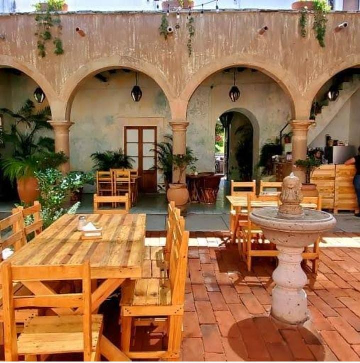
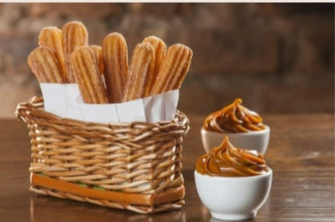
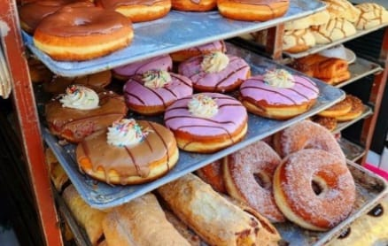

La gastronomía de Cuquío, Jalisco, refleja la riqueza cultural y tradición del pueblo, con sabores auténticos que conquistan tanto a locales como a visitantes.
Los dulces tradicionales, como el ate de membrillo y las cocadas, completan la experiencia culinaria de este encantador municipio jalisciense. Sin contar los perrones
Tacos que hacen, ya que cuquio es unos de los municipios con los mejores Tacos ala redonda, haciedo mayormente que los turistas visiten nuestro municipio por ellos mismos
EL EDEN:
PLATILLOS:
En el Eden se pueden encontrar platillos como Postres,Desayunos,Bebidas Agradables y demas
en el cual sus platillos tipicos son muy conocidos por sus habitantes y turistas y algunos de ellos son:
-Pasteles
-Malteadas y Frappes
-Lonches y Hamburguesas
Cafes y Bebidas (Bebidas dulces y de todo tipo) etc

UBICACION:
C.Ramon Corona 23, 45480 Cuquio Jalisco
CHURROS DE TADEO:
-Otro producto que es típico y artesanalson los churros de Don Tadeo, a quien
su padre, le enseñó a prepararlos ya hace mucho tiempo. Estos se pueden
adquirir en la plaza principal o en el barrio del rincon.

UBICACION:
En la plaza principal del municipio, 45480 Cuquio Jalisco
CREMERIA PONCE:
La Cotorra” el pan tradicional denuestro pueblo. De igual manera surgio
el Huarache y la empanochada,piezas que debes probar si vienes a Cuquío.

UBICACION:
En la plaza principal del municipio, 45480 Cuquio Jalisco